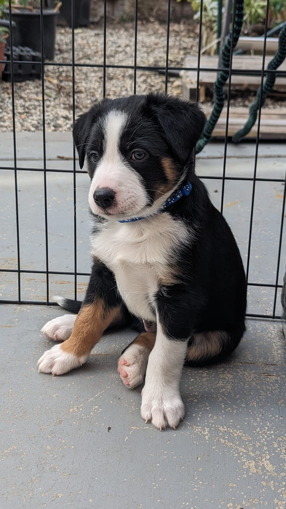
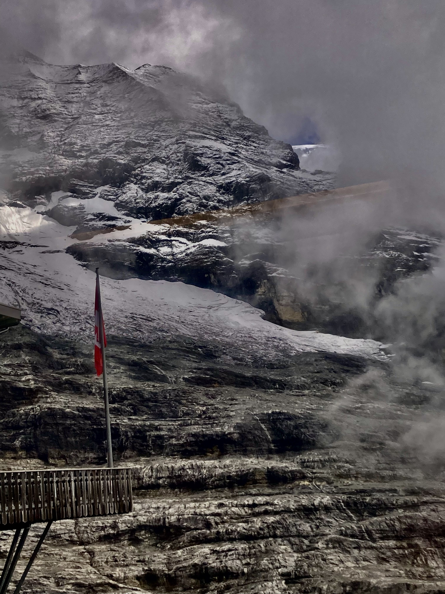

Disha Ramachandran
"Deesh"
About Me

My name is Disha Ramachandran, and I am currently a sophomore at Canyon Crest Academy My favorite subject in school is biology, but I enjoy learning about all the different sciences. This semester, the classes I am taking include AP Art History, AP Chemistry, Advanced Business Management, and AP Computer Science Principles. Outside of school, I spend lots of time with my family and friends. My close family consists of my mom, dad, younger sister, and dog, Ray, with most of my extended family living in India. My close friends are Vibha, Ollin, Shravya, and Diya, who I met throughout elementary and middle school.
Hobbies

In my free time, I enjoy playing basketball playing the piano, and traveling. I have been playing basketball competitively since 3rd grade, and it has taught me a lot of valuable life skills like dealing with pressure and working well in a team. I've been on the Girls Varsity Basketball team for 2 years and I was captain this past season. Additionally, I have been playing piano since 1st grade and am going to complete Level 9 this year through the Guild Program. I love listening to music and playing songs on the piano as it helps me express myself in a creative manner. Lastly, traveling enables me to experience different cultures and try new foods, providing me with memories that will last a lifetime. Some of my favorite places that I've visited are Italy, Switzerland, and India.
My Favorites

My favorite color is red, specifically a burgundy shade, because I think it looks very elegant and reminds me of roses, which are my favorite flowers. My most listened to music artists on Spotify are Drake, SZA, Don Toliver, and Bryson Tiller, with the genres of music I commonly listen to being Rap or R&B. My favorite foods are chicken tacos, pasta, and sushi, but in general, I am a very picky eater. My favorite season is winter because I love the rain and my favorite holiday is Christmas due to the grandeur of all the festivities and decorations. Finally, my preferred genres of movies, books, and shows are mystery and thriller as I feel that it's very entertaining to try to guess the plot and see what happens.